Drukarnia 2K istnieje na rynku poligraficznym od 1986 roku. Od samego początku poszukiwaliśmy swojego miejsca na rynku, by ostatecznie wyspecjalizować się w produkcji opakowań.
Nowoczesny, stale rozwijany park maszynowy oraz fachowa kadra pozwalają zapewnić naszym klientom bezpieczeństwo, terminowość dostaw i wysoką jakość produktu.
Łączymy doświadczenie, dostępne technologie i pasję, aby sprostać oczekiwaniom naszych klientów.
 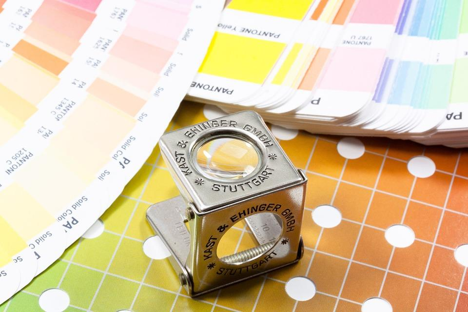
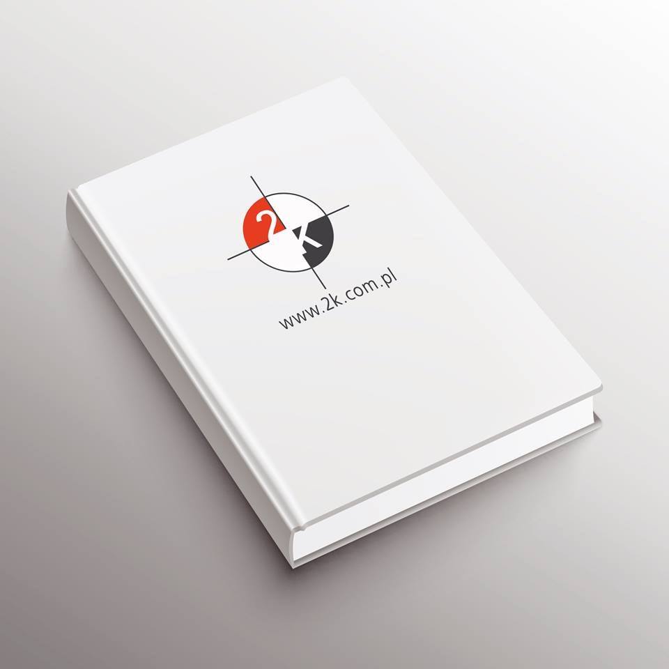
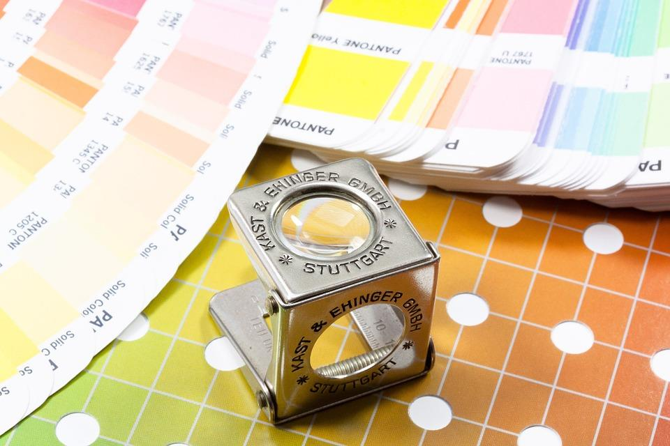
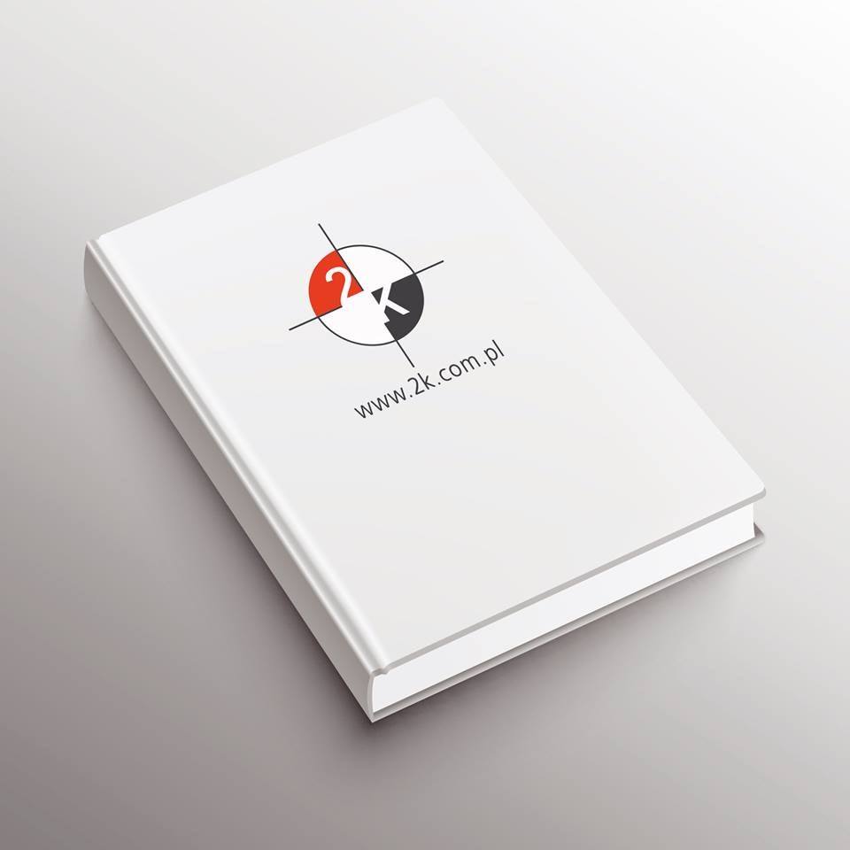
 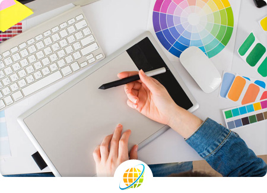
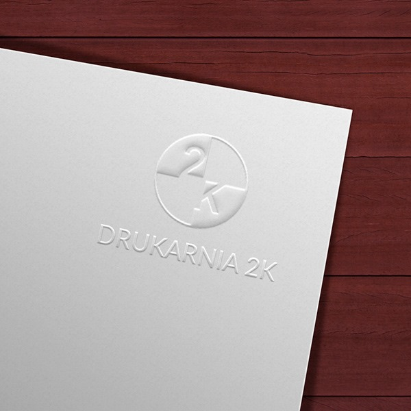
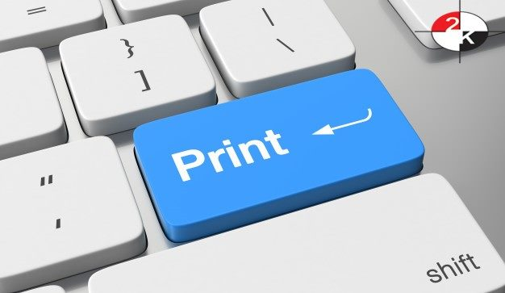
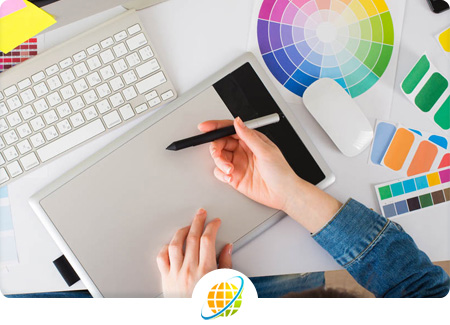
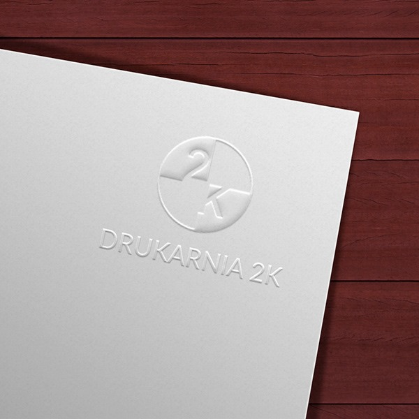
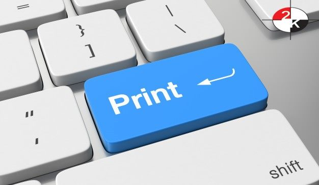


 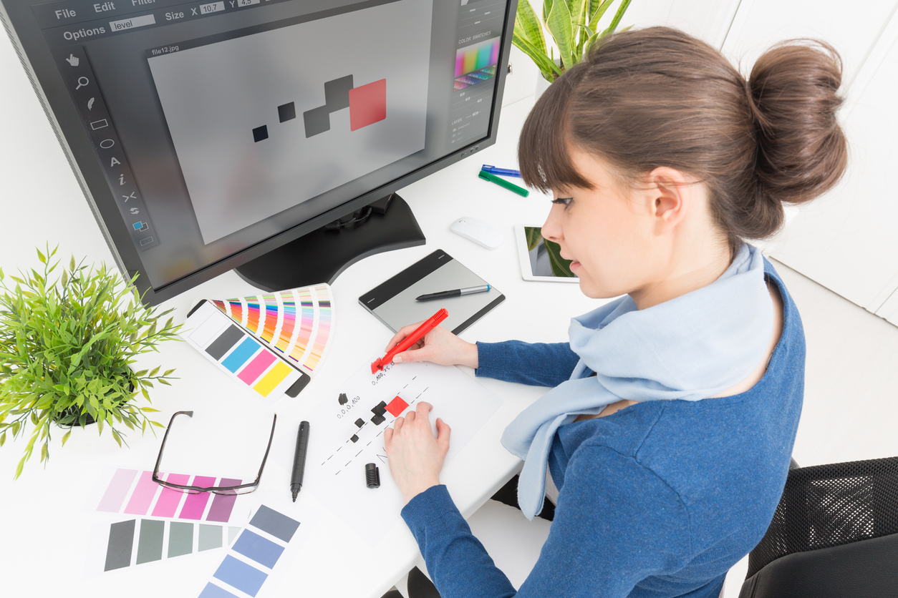
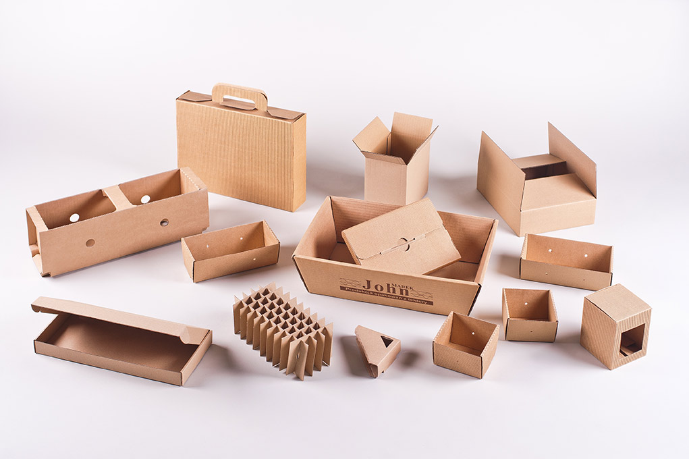
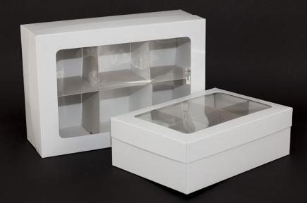
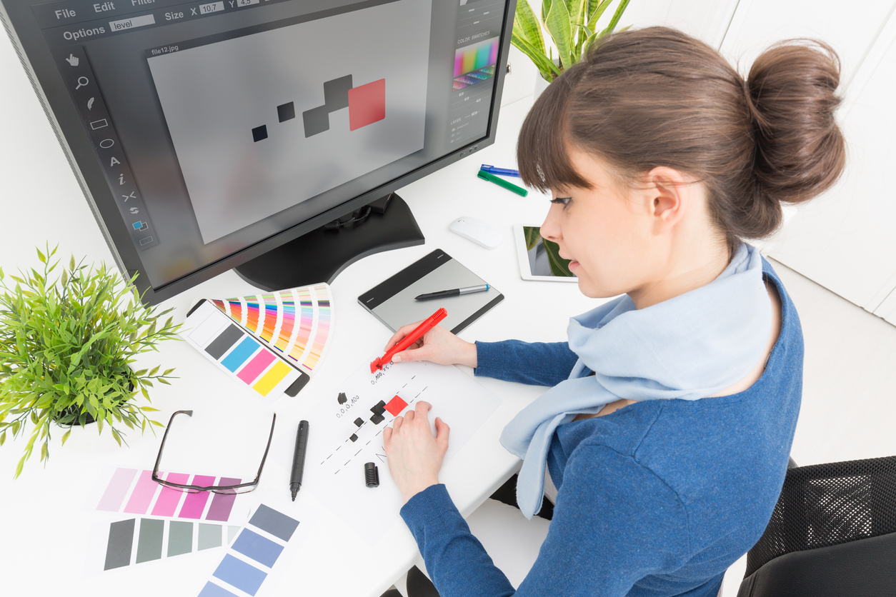
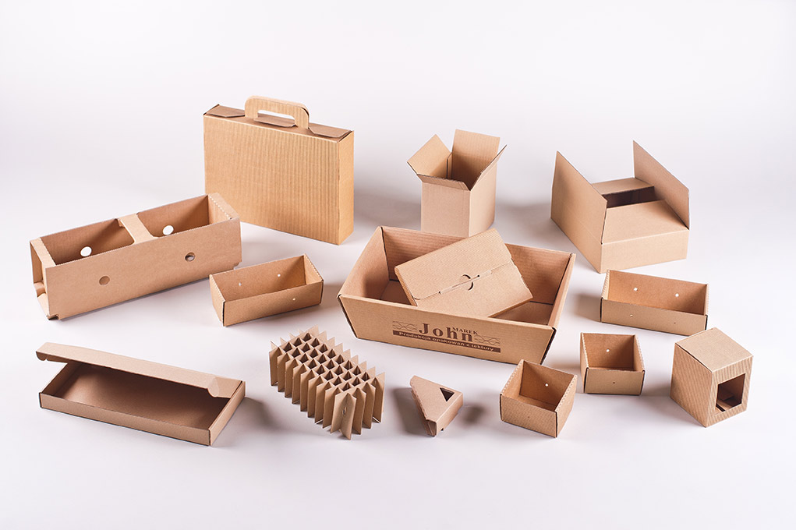
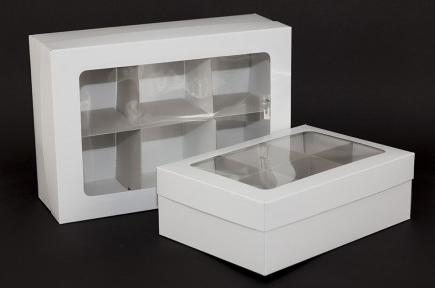
Nasza kadra, to zespół fachowców gotowych na nowe wyzwania technologiczne i logistyczne.
Wieloletnie doświadczenie zawodowe, specjalistyczne wykształcenie oraz nieograniczona wyobraźnia pozwala nam zaoferować Państwu niebanalny produkt, wykonany z dużą starannością przy zachowaniu rozsądnych kosztów.
Inwestujemy w nowe rozwiązania offsetowe i cyfrowe, aby sprostać wciąż rosnącym wymaganiom klientów.
Certyfikat FSC
W trosce o środowisko uzyskaliśmy Certyfikat FSC FOREST STEWARDSHIP COUNCIL. Certyfikat FSC stanowi dowód, że produkcja, przetwarzanie i handel drewnem oraz produktami pochodzenia leśnego odbywa się w zgodzie z obowiązującymi przepisami UE.

Oferta
Wykonujemy kompleksowe zamówienia na wszelkiego rodzaju produkty poligraficzne, jak np. książki, katalogi, gazetki , foldery, ulotki, papiery firmowe, koperty, teczki, plakaty, wizytówki, kalendarze, naklejki, czy etykiety, torby reklamowe począwszy od projektu, poprzez druk, procesy wykończeniowe, aż po dostarczenie gotowego produktu do Klienta.
Szczególnie specjalizujemy się w produkcji opakowań na wszelkiego rodzaju produkty: delikatną bieliznę, kosmetyki, rajstopy, artykuły ogrodnicze i chemiczne.
Wykonujemy opakowania zbiorcze z kartonu, tektury i tektury kaszerowanej z nadrukiem.
W naszej ofercie znajdziecie Państwo również produkty ekspozycyjne: stojaki, standy i display'e.
Dział graficzny
Nasz dział graficzny zawsze służy pomocą i zapewnia profesjonalną obsługę.
Posiadamy własne studio DTP, które pozwala na przygotowanie projektów do druku od podstaw we własnym zakresie bądź w oparciu o materiały dostarczone przez klienta. Do każdego z produktów podchodzimy nieco inaczej, gdyż każdy z nich jest na swój sposób wyjątkowy. Jednakże zawsze dbamy o to, aby wszystkie wykonywane przez nas prace same w sobie stanowiły gwarancję najwyższej jakości.
Tu jesteśmy
Dużym ułatwieniem dla klientów jest położenie naszej drukarni w samym centrum Polski, w pobliżu skrzyżowania autostrad A1 i A2.
512-141-215marketing@2k.com.pl
ul. Płocka 35/43, 93-134 Łódź